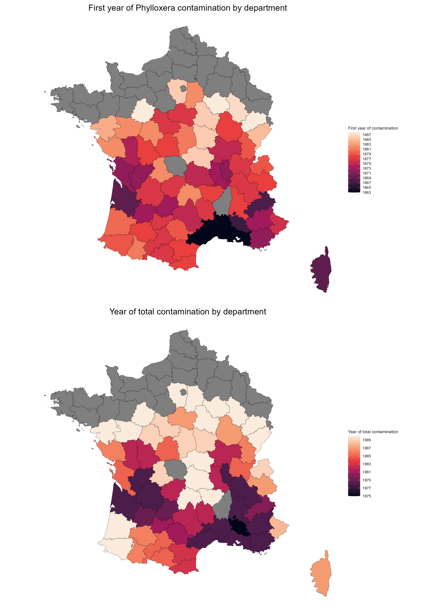
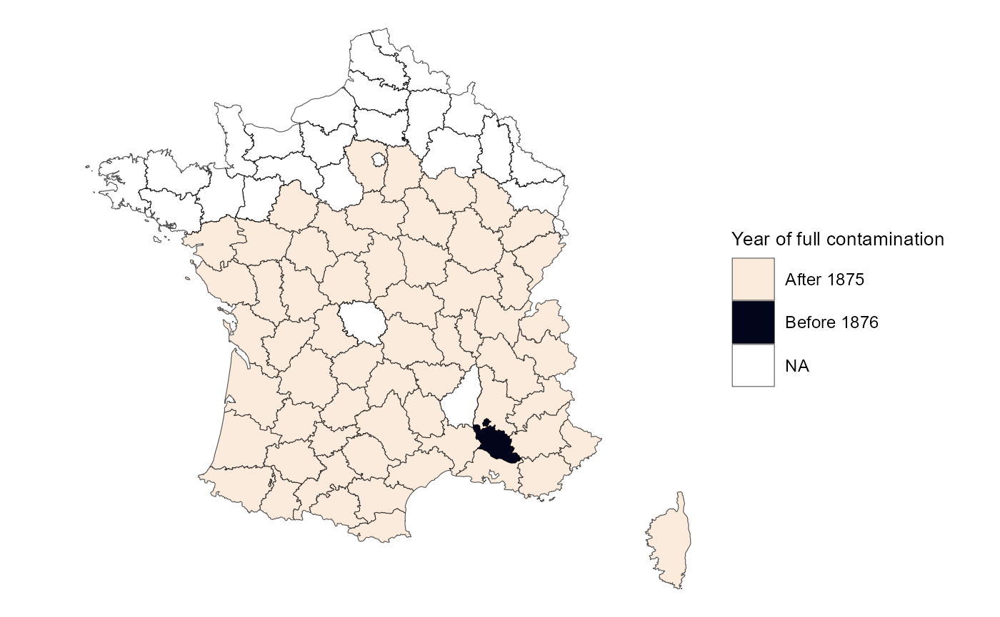

Stat_desc.rmd## ── Attaching core tidyverse packages ──────────────────────── tidyverse 2.0.0 ──
## ✔ dplyr 1.2.0 ✔ readr 2.2.0
## ✔ forcats 1.0.1 ✔ stringr 1.6.0
## ✔ ggplot2 4.0.2 ✔ tibble 3.3.1
## ✔ lubridate 1.9.5 ✔ tidyr 1.3.2
## ✔ purrr 1.2.1
## ── Conflicts ────────────────────────────────────────── tidyverse_conflicts() ──
## ✖ dplyr::filter() masks stats::filter()
## ✖ dplyr::lag() masks stats::lag()
## ℹ Use the conflicted package (<http://conflicted.r-lib.org/>) to force all conflicts to become errors
## Linking to GEOS 3.13.1, GDAL 3.11.4, PROJ 9.7.0; sf_use_s2() is TRUE## options: ENCODING=UTF-8
## Reading layer `DEPARTEMENTS_1876' from data source
## `C:\Users\morga\OneDrive\Documents\MASTER_2\Semester_2\Mémoire\Phylloxera_Crime\Stat descriptives\DEPARTEMENTS_1876.shp'
## using driver `ESRI Shapefile'
## Simple feature collection with 87 features and 9 fields
## Geometry type: MULTIPOLYGON
## Dimension: XY
## Bounding box: xmin: 99226 ymin: 6049647 xmax: 1242375 ymax: 7110524
## Projected CRS: RGF93 Lambert 93## Warning: There were 23 warnings in `mutate()`.
## The first warning was:
## ℹ In argument: `last_year = min(an[phyllox_tot == 1], na.rm = TRUE)`.
## ℹ In group 2: `nomdepancien = "AISNE"`.
## Caused by warning in `min()`:
## ! no non-missing arguments to min; returning Inf
## ℹ Run `dplyr::last_dplyr_warnings()` to see the 22 remaining warnings.
## Warning: There were 23 warnings in `mutate()`.
## The first warning was:
## ℹ In argument: `last_year = min(an[phyllox_tot == 1], na.rm = TRUE)`.
## ℹ In group 2: `nomdepancien = "AISNE"`.
## Caused by warning in `min()`:
## ! no non-missing arguments to min; returning Inf
## ℹ Run `dplyr::last_dplyr_warnings()` to see the 22 remaining warnings.